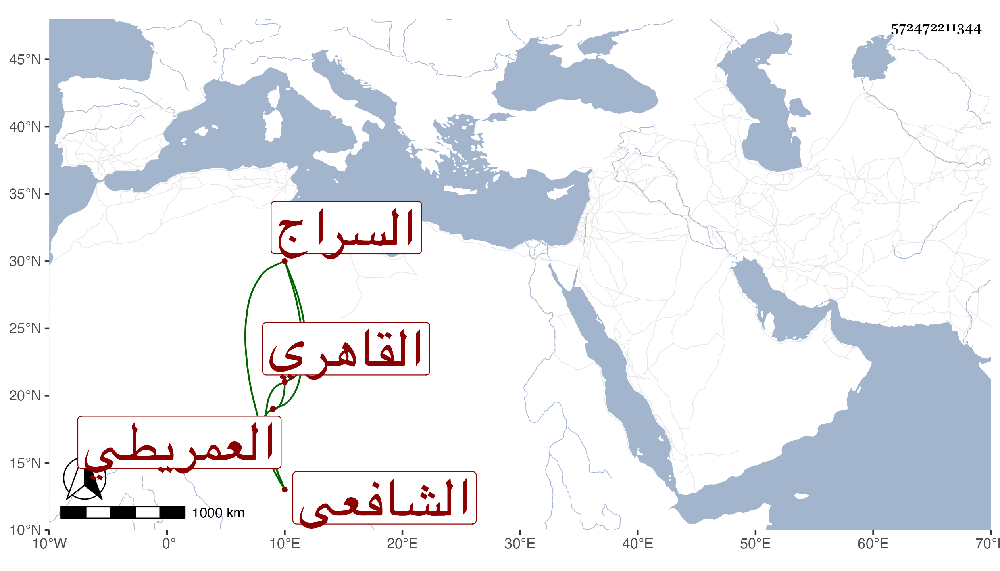

0902Sakhawi.DawLamic.ITO20230111-ara1.EIS1600.572472211344
Biography ID: 572472211344
240
عمر بن أحمد بن عمر السراج العمريطي ثم القاهري الشافعي والد بدر الدين محمد ويعرف بالعمريطي ، حفظ القرآن وكتبا واشتغل كثيرا وحضر دروس الشرف السبكي والونائي ، وحج في سنته وقرأ على شيخنا يسيرا في آخرين كالمناوي وفضل وتكسب بالبر في حانوت بسوق طيلان وقتا ثم بالشهادة مع المداومة على قراءة البخاري دهرا في الأشهر الثلاثة بجامع الغمري . مزيد حرصه على ذلك ومثابرته عليه في كل يوم مع أن سكنه بنواحي الأزهر بحيث أجاد قراءته بل أم به حين كان سكنه قريبا منه يسيرا ، مات في ثاني ذي الحجة سنة ثمانين سامحه الله وإيانا .
